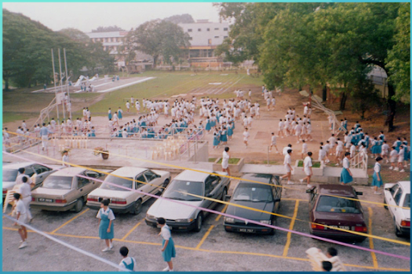

“华教根基在风雨中坚毅自强，经历多少艰难依然士气高昂”，伴随着铿锵有力的琴声，完美堂内莘莘学子竖立着，娓娓动听的旋律在耳边萦绕，歌声如涓涓细流，在空气中轻轻荡漾；如燃烧的火焰，充满激情和生命力量。环绕四周，是宏伟壮丽的。
循人学校古早校门
正如歌词中所说，华文独立中学，作为华教根基，历经重重艰难，仍然在马来西亚这片土地扎根生长，长出枝桠，面对风雨坚韧生长，不屈不挠。许多人也在这片大树的树荫下，被滋润着，渐渐长大，将华文教育继续延续下去。
也许许多人对华文教育或是独立中学并没有概念，正如如今我们这一辈一样，我们在这片树荫下乘凉，被滋润，茁壮成长，却从不过问栽下这颗大树的人为何，黄建华董事先生亦是如此，他在父亲的引领下，在一片森林中寻到这颗被大树压制的小树，在树荫下阅读、乘凉、长大...... ......
而那独属于黄建华董事与循中之间的曼妙旋律，也在那时悄然响起......
当代草场情景
循中90年代的周会
我们跟随黄建华董事醇厚的嗓音，身临其境地回到了六七十年代的循人中学。六七十年代，正是均贫的年代，物质的匮乏，少年人们总是没有闲钱去到电影院里观赏新上映的好戏；但少年们天性本就热烈，自然也花费大多时间在娱乐上，有时相约一起打球，一起在课间到草场玩闹。当然，也正因为物质的匮乏，阅读也成了打法时间最主要的媒介，黄建华董事亦是在这样的环境下，培养了阅读的习惯。
那时候，循人不似如今高楼林立。大片土地面积都被教学楼、活动楼、联课活动场地占据。过去的排球场斜坡向下望去便是一片操场，如今的篮球场设有观众席以及遮风挡雨的大棚，不再需要风吹日晒。如今的英文楼底层也曾是学生们最常光顾的体育馆。
初入循中的黄建华董事与我们同样，不过是抱着求学的目的来到这里，对于学习历史与发展并无概念，而如今身为董事的他，却侃侃健谈的与我们分享，他所知的，循中故事。
教育法令的颁布，循人学校中学小学部不接受了政府的改制，为此，小学部搬离了，也正因为教育法令的缘故，促使独中复兴运动兴起，也正是黄建华董事就读的那一年，学生人数暴增至千余人。可是由于黄建华董事当时每年升班的人数越来越少，从初中那一年十多班，直到毕业那一年才四班，毕业学生人数只有百余人。所以可见最终毕业的校友少之又少，可以见得那个年代能坚持到毕业的人数少之又少。
今时不同往日，如今的循人不在拮据与学生人数与师资问题。唯一能将我们与过去联系在一起的，便是不论过去或是现在，我们仍然身着着白衣白裤，虽与部分国民型中学不无差异，但校徽是我们不变的勋章。
当时黄建华董事的国中朋友也因服装而误以为循人也是国民型中学，但终究是有差别的。循人不论是国中相比，亦或是与其他独中相比，都是较晚放学的，但循中生拥有的校园色彩，也是丰富而又独特的。在学校发展纲领的引领下，我们也渐渐培养了各个方面，步入社会必有其用处的能力。学会独当一面，学会自强不息。
六七十年代并不是一个先进的时代。当时的科技发展尚处于起步阶段，人们的生活方式仍然十分简朴。在没有智能手机和互联网的时代，人们大多只能利用文字将美好的事物定格，而日记便成为承载这些回忆最好的伙伴。黄建华董事说：“记忆是不可靠的，但文字却是充满力量的”。
“因为你有回看，会发现这个事情原来在我们的生命里面曾经发生过，而有些人我们遇到过，但是如果没有把它们记录下来，这些都可能会在我们的记忆中里面会消失掉。”黄建华董事觉得文字是很有力量的。确实，我们利用文字去描绘美好，记录美好；我想他也在日复一日写日记的过程中，爱上了文学，被文字浸染，从而开始了他的创作之路。
文学总是赋予人一种能力，我们利用它谱写诗篇，描写生命，记录芸芸众生，浮生一；文字代替人们的大脑，记录那些在数十载洪流中极易消逝的美好，描绘那些久别重逢的欣喜，铭记那些刻骨铭心的遗憾，再回不到的过去，过往种种，在文字的力量下，永不褪色。文字之曼妙，在于它能让我们重温过往，感悟人生，并以此启发未来的人生，更广阔无垠的旅途。
随着时代变迁，文明向前踏步，循中肉眼可见的发展得愈发的好，设备也随之越来越优异。学生人数的与日俱增，从前的风景在白驹过隙中不复存在，渐渐的，一字楼被E字楼取代。但渐渐的，科技的进步带来的设备，让年轻一辈有了比文字更迅捷的回忆承载着，我们不再利用文字来维持记忆。
然而，在这个快速便捷的时代，我们是否忽略了文字赋予我们独有的温情？科技固然带来了便捷的方式去承载记忆，但那些承载着我们心灵记忆的文字，那些充满感情和故事的文字，却有着无可替代的力量。它们不仅记录了我们的经历，更在我们的内心深处留下了不可磨灭的印记。也许它们的词藻并不华丽，也许句子不优美，但却是我们一笔一划，由心而发的肺腑之言。
有一天，当我们回看照片，会否拥有文字记录带来的触动那般生动？有一天，当我们兴致勃勃地回看那些文字，往事如潮水般涌来，喜悦、悲伤、感动、遗憾，种种情感在心头翻滚，让我们重新感受曾经的每一个瞬间。文字的力量，在于它能够跨越时空，将我们的心灵连接在一起，让现如今的自己与过去的自己对话，让我们在忙碌的现代生活中，寻到一处静谧宁静的乌托邦。
在与黄建华董事攀谈的过程中，我们也深刻体会了文字所拥有的力量。
他对母校浓厚的感激与骄傲之情无一不从一字一句中表述出来。不仅是身为毕业校友、学校董事，更是身为学校学生的家长；他拥有的与循人千丝万缕的关系，更促使他更深刻了解循人在硬体和人文的建设，设备、教学、师资培训所作出的辛劳付出。也因此，在谈及他为母校写的歌曲时，他脸上洋溢笑脸，是如此明亮而又撼动人心。
“我感到很骄傲，因为这是我自己写给母校的歌。” 这句话在静谧的空间里响澈良久，他眼里闪烁的亮光与面上无法掩饰的骄傲与自豪。 当《领航》与《我们的循中》在校庆、周会、自己孩子的毕业典礼中奏响，我想那是让人引以为傲的。在见证儿女盛大而又欢喜的一刻，听着在完美堂内奏响的旋律，即将毕业的莘莘学子们开口朗朗唱起这相伴他们6年的歌曲，正是他挥洒墨水，为母校献上的庆生礼物。那时的黄建华董事也许是如沐春风，英姿勃发的。
黄建华董事笔下的许多诗集都被可以在循中图书馆中循得。我尤其对《在一个久别的城市中重逢》的诗句印象深刻。
山何其高，海何其大，
那炙热如火的信仰，像一张理想的旗帜，
逆风越大，飘得越激昂不屈，
天空越暗，映得越撼动人心。
如今在风中飘荡的校旗，承载的正是华教先贤们如火的信仰。循中跨越百年的时光，历经重重险阻，仍然树立；我们仿佛看见为华教奋斗的斗士们目光如炬的双眼，在阴暗看不见未来的过去，眼中映射着坚定的理想。
他说：“我们必须自力更生、自强不息！” 面对无法得到政府经济援助的困难，我们循中儿女，必须团结一心，克服万难，为母校捐钱。这不是一种负担，而是一种光荣的使命，是我们成长过程中必经的考验。这是身为循中儿女的我们，义不容辞的责任。我们在这片土地上扎根生长，正是因为有前辈们的无私奉献。如今，轮到我们来守护这片家园。
他的话语，让我们感受到那份深沉的爱与责任。我们每个人都明白，捐款不仅仅是金钱的支持，更是情感的纽带，将我们与母校紧紧相连。在这份爱与责任中，我们找到了共同的归属感，也找到了前行的力量。
“看到学校如今的模样，我觉得很欣慰”黄建华董事如是说。面对岁月的冲刷，洗礼；时势变迁、人事变更、思潮交替，我们华文教育仍然昂扬不灭。
黄建华作为循中董事部的一员，衷心的为循中如今的发展而感到引以为傲。他说：“今日我以循人为荣，明日循人以我为荣”，黄建华董事也确实做到了。他身处异国他乡，深造学业之时，因拥有流利深厚的文学底蕴，他的文章让他的教师感到惊讶。后来毕业后，黄建华董事更是正式开启了他的创作旅途，直至今日，这段旅途仍在不断拥有着新故事，影响着许多的人。
毕业后进入企业工作的黄建华董事，也能利用流畅的笔法书写全英文的工作报告，与其他从欧美留学归来的同事相比，他用词精准，语法从不出纰漏，大多数同是都对拥有纯中文教育的他刮目相看。母校对于黄建华董事的栽培，从来都是让他引以为傲的。
循人中学的每一次与时俱进，都少不了董事们在背后的默默付出，为建设新的校舍任劳任怨，这背后当然也包含了黄建华董事的一份力。
我们每一次配合时代作出的改变，董事们总是支持，为学校提供资金，提供规划，像是未来课室、电脑室，都是于时代进步挂钩而形成的。还有他为循人而作的歌，字字句句，都体现了他对华教，循人的喜爱与骄傲。
他所作的歌曲，与我们每个循中儿女都是息息相关的，与华教更是千丝万缕无法斩断的情缘。黄建华董事在循人中学积累的浓厚的文化底蕴，以歌曲为媒介，继续熏陶着后来的学子们。
他说：“你每一次写完，当被登出来的时候，你总有些不满意的。你觉得这篇文章，可以写得更好，对吗？结构或者用词，大家有创过就知道。我可以写得更好，那我又再写。”在创作过程中，总会有不满意之处，总觉得可以再修改，更完善，更完美。有时只写的下几个字，三两句，有时候却能下笔如有神。
但写文章就如同制作面包一般，需要一段时间酝酿，然后慢慢发酵、待它成熟，才可进入烤箱烘烤，才能拥有松软可口，香气扑鼻的面包。创作也是同理，须得耐心等待，灵感于技巧缺一不可，而写好一篇诗、散文、小说自然也需时间慢慢打磨，也许也会有瓶颈，需要慢慢突破，一一攻克，你就会知道，应该如何写下去。
作为长辈的黄建华董事，虽没有长辈的架子，却仍给予我们作为过来人语重心长的建议。那些千言万语，都汇聚成四个字——终生学习。学习总是无间断的，尤其我们生于年轻的时代，也许今天我们所学，明日便以过时了。在知识旺盛的年代，不要抗拒去学习一切新的事物，我们总要积极地去学习，在老师给予我们的基础知识上，去自学延申其他更深入的知识，思考解答不了解之处，活跃自身的思维。
组员：
傅善楺（8）
吴玮莹（9）
戴瑜涵（20）
苏越儿（23）
张义添（48）